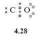
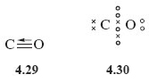
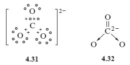
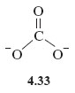

1.8 Some more examples of dative bonding
On the face of it the bonding in carbon monoxide, CO, the highly toxic gas formed by incomplete combustion of natural gas, is a bit of a puzzle.
A student was asked to sketch the Lewis structure for CO, and came up with structure 4.28.

Why is the representation of CO as a double bond likely to be incorrect?
The oxygen atom with two shared electron pairs and two non-bonded pairs, has an octet, but carbon is two electrons short of a noble gas state.
Suppose that in addition, a dative bond is formed by allowing one of the oxygen non-bonded pairs to become shared between oxygen and carbon, then carbon can achieve a filled shell configuration.
This is represented by structures 4.29 and 4.30.

There are now three shared electron pairs between carbon and oxygen, so this is an example of a triple bond.
Note again the use of an arrow to denote the donation of a pair of electrons from oxygen to carbon.
Dative bonds are also useful when writing Lewis structures for ions such as carbonate, CO32−. Beginning in the usual way by adding the overall charge to the atom with highest valency, namely carbon, this means adding two electrons to carbon, which gives the atom eight electrons in its outer shell. Formation of one C=O double bond and two C→O dative bonds then gives Lewis structure 4.31, which is equivalent to structural formula 4.32.

Before leaving dative bonds, consider now an alternative way you often see them represented.
Suppose that atom A forms a dative bond with atom B by donating a non-bonded electron pair to it, this is represented by A→B.
But consider atom A before the bond is formed.
If you were to remove one of the lone pair of electrons on atom A and put it on atom B, what would be the result?
You would end up with the separate ions [A•] + and [B•]−.
Suppose you now form a conventional shared electron-pair bond from the odd electrons on the two ions. The electrons are shared between the A and B sites in just the way as before, but the bond would now be written as .
Thus, A→B and are equivalent ways of writing the dative bond between A and B, and both are equally valid. The structures H3N→BF3 and CO can therefore also be written as H3−F3 and respectively.
Transform Structure 4.32 for the carbonate ion into this new dative bond representation.
See Structure 4.33; each C→O bond is replaced by −, and as the carbon atom forms two dative bonds, a charge of +2 must be added to the double negative charge on carbon in Structure 4.32. This gives zero charge on carbon in the new version, but as there is now a single negative charge on each of the two singly bonded oxygens, the total charge on the ion is −2 as before.

OpenLearn - Discovering chemistry
 Except for third party materials and otherwise, this content is made available under a Creative Commons Attribution-NonCommercial-ShareAlike 4.0 Licence, full copyright detail can be found in the acknowledgements section. Please see full copyright statement for details.
Except for third party materials and otherwise, this content is made available under a Creative Commons Attribution-NonCommercial-ShareAlike 4.0 Licence, full copyright detail can be found in the acknowledgements section. Please see full copyright statement for details.